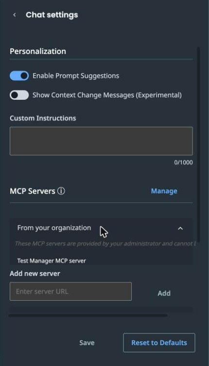
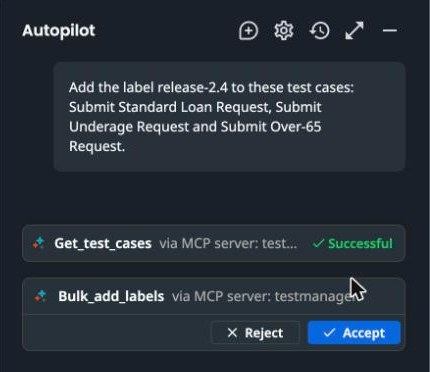
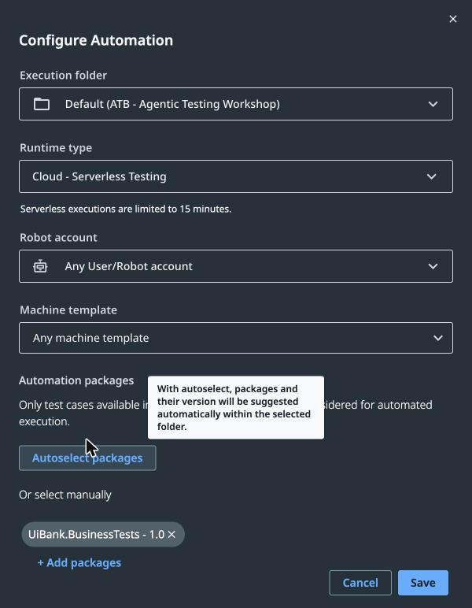
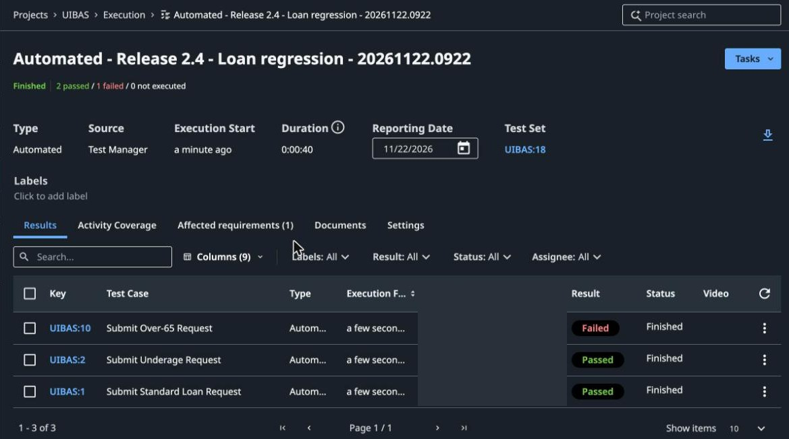

7. Build and Run the Regression Set¶
Why it matters for you: a QA manager can organize and run a release regression without code or clicking through grids, and a UAT tester gets a first opinion on every failure in a minute. You still check both against Execution.
Autopilot chat labels your three linked test cases and builds the release regression set for you. You run the set on a cloud robot, then ask chat to triage the result.
Before you start
✅ Submit Standard Loan Request, Submit Underage Request and Submit Over-65 Request show UiBank.BusinessTests in the Package Name column, from 6. Automate with Studio Web.
✅ Your project is open. Autopilot chat opens from the Autopilot icon (the sparkle, top right), set to Edit mode, as in step 1.
What MCP means for you¶
So far, chat mostly read your project. In this step it changes it for the first time: it adds labels and creates a test set. Read this box before you type.
MCP in plain words
Tools. To read or change anything in Test Manager, chat uses approved actions called tools, such as "add labels" or "create a test set". A set of tools is an MCP server. MCP (Model Context Protocol) is the standard plug that connects an AI assistant to a system like Test Manager. Test Manager comes with its own MCP server, so there is nothing to set up. You can see it under Autopilot → ⚙ Chat settings → MCP Servers → From your organization → Test Manager MCP server.
What you'll see. Before each tool runs, chat shows a card with the tool's name and "via MCP server: testmanager". Today you meet these:
✅ Bulk_add_labels – adds a label to several test cases at once
✅ Create_test_set – creates the test set
✅ Assign_test_cases_to_test_set – puts the test cases in it
✅ Get_test_executions – reads run results, for the triage
You approve each one. In Edit mode, every tool card waits for Accept or Reject – reads included, not only changes. One prompt can mean 3–7 clicks. Read the tool name, then select Accept. Built-in tools such as Autopilot Search and Autopilot Chart run without a card.
What it can't do today. With the standard Test Manager tools, chat can't start, schedule or stop a run, and it can't create Execution Insights. You do those with buttons. An admin can add more tools later.
Cost. Each chat turn uses your AI usage pool. Dedicated buttons, such as Evaluate quality or Generate Report, don't (Autopilot usage pool for testing).
Safety. Chat acts as you, so it can only do what your own Test Manager permissions allow. Every action is recorded in your organization's AI Trust Layer audit log. Agent mode runs tools without asking, and the docs label it experimental: stay in Edit mode, so nothing changes without your OK.
More: About Autopilot chat.

Label the test cases and build the set¶
Autopilot chat
A label is a tag on a test case, such as release-2.4. A test set is a group of test cases that run together. You label first, then let chat build the set from the label.
It's your turn now!
-
Paste this into Autopilot chat and send it:
Add the label release-2.4 to these test cases: Submit Standard Loan Request, Submit Underage Request and Submit Over-65 Request.Chat may first read the test cases (
Get_test_cases), then asks to runBulk_add_labels. It may also read the labels back (GetAllObjectLabelsByObjectId) once per test case. Select Accept each time – about 2–4 clicks, under a minute. It answers with the three test cases it labelled.
-
Then paste:
Create a test set called 'Release 2.4 - Loan regression' and assign all test cases with the label release-2.4.Chat first finds the test cases with Autopilot Search (no card), then asks to run
Create_test_setandAssign_test_cases_to_test_set– about 2–3 clicks, under a minute. It confirms the set and its three test cases. -
Type the set name with a plain hyphen, as shown: later prompts look for it by name.
Check it
✅ Before each change, chat showed the tool name and waited for your Accept.
✅ In Test Sets, Release 2.4 - Loan regression exists. On its Test Cases tab it lists exactly 3 test cases: Submit Standard Loan Request, Submit Underage Request and Submit Over-65 Request.
Chat didn't work? Build the set by hand
- In Test Sets, create a test set named
Release 2.4 - Loan regression. - On its Test Cases tab, under Static Assignment, select Add Test Cases, tick the three test cases and select Assign.
Static or Dynamic Assignment?
A test set gets its test cases in one of two ways:
✅ Static Assignment – pick test cases one by one. The set always runs exactly these. Chat's assign tool adds them this way.
✅ Dynamic Assignment – add labels. The set includes every test case with at least one of them, also ones you label later.
For a release set, Dynamic Assignment on release-2.4 keeps the set up to date by itself. Today, keep the static set chat built.
Configure the automation¶
Test Manager
Tell Test Manager where and on which robot the set runs. You do this once per test set.
- Open Test Sets → Release 2.4 - Loan regression → Test Cases tab, and select Configure Automation.
- Execution folder shows Default (ATB - Agentic Testing Workshop), the shared folder you set as Default Folder in step 1. Leave it.
-
Runtime type may be empty or show Cloud - VM Testing. Either way, pick Cloud - Serverless Testing. The panel then says "Serverless executions are limited to 15 minutes." – the set needs about one.
Why not Cloud - VM Testing?
Cloud - VM Testing is the shared robot that runs everyone's Run autonomously (Preview) tests from step 4. Your set would wait in its queue. Cloud - Serverless Testing starts fresh cloud robots for each run and doesn't wait behind the Run autonomously queue.
-
Leave Robot account on Any User/Robot account and Machine template on Any machine template.
- Under Automation packages, select Autoselect packages. It adds UiBank.BusinessTests - 1.0.
- Select Save. Test Manager confirms with Automation details for testset saved successfully!

Optional: formal sign-off (governance)
Need a signed record of the over-65 result? Test Manager can govern test results so approvers sign them.
Want the result governed from the start? Enable it now, before Execute → Automated: Project Settings → Governance (see 9. Decide Go or No-Go for the settings). Forgot? You can still govern the result afterwards – step 9 shows how.
Run the set¶
Test Manager Robot
With the standard Test Manager tools, chat can't start a run, so you use the button.
-
On the test set, select Execute ▾ → Automated.

-
The execution page opens, with the message Started Execution for Release 2.4 - Loan regression. In Execution, the run is listed as Automated - Release 2.4 - Loan regression - followed by the date and a number.
- Wait about 45 seconds, plus a short queue if the whole class runs at once. Refresh until the header says Finished.
Check it
✅ The header reads 2 passed / 1 failed / 0 not executed (0 none).
✅ Submit Standard Loan Request and Submit Underage Request passed. Submit Over-65 Request failed.
✅ Open the failed Submit Over-65 Request result. Its log shows a failed verification: the test expected UiBank's rejection ("Sorry…") and UiBank answered "Congrats!". That is an assertion – UiBank gave the wrong answer – not a robot error.

Failed is not always UiBank's fault
A robot problem also shows as Failed. If the log says something like Failed to start browser, or all three failed, it's the robot, not UiBank: tell your trainer. See Troubleshooting.
If you or your trainer look at Orchestrator → Jobs, the over-65 job shows as Faulted. That is how Orchestrator reports a failed assertion – it isn't a robot error either.
Triage the results in chat¶
Autopilot chat
A failed test doesn't always mean a broken app: the test itself can expect the wrong result. You made this call by hand in step 4. Now ask chat to check the failure against the requirement.
It's your turn now!
-
Paste into Autopilot chat:
For the latest execution of Release 2.4 - Loan regression: give me the totals passed, failed and none. For each failed test case, compare its test data and expected result with the acceptance criteria of the Submit Loan Request requirement. Say whether UiBank breaks the requirement (UiBank defect) or the test expects the wrong result (test defect), and quote the criterion. -
Accept each tool card: chat reads the test set, the requirement, the execution, the failed log and the test steps. About 5 clicks, 1–2 minutes.
- Compare its answer with Execution. Chat can miscount, so the page is the truth.
Check it
✅ Chat's totals match Execution: 2 passed, 1 failed, 0 none.
✅ Chat calls Submit Over-65 Request a UiBank defect and quotes the over-65 criterion: applicants over 65 are rejected with "Not approved due to age." UiBank approved a 66-year-old, so the test is right and UiBank is wrong. Your own test case's steps may use another age over 65: the verdict is the same.
✅ The success rate is passed out of passed + failed: 2 / (2 + 1) = 66.7%. You decide go or no-go in step 9 – on the defect, not on this number.
Chat calls it a test defect? Ask it to check the test case against the over-65 criterion again, and tell your trainer.
Chat may add a "possible secondary issue": the automation checks for "Sorry", while the criterion says "Not approved due to age." That's a fair point to discuss with the class. It doesn't change the verdict: UiBank approved an applicant it must reject.
Optional: a second opinion with Autopilot Search
Ask chat:
Find all failed test case logs in the latest execution of Release 2.4 - Loan regression.
It uses Autopilot Search (no tool card) and should list Submit Over-65 Request only. Compare the list with Execution. See Search Test Manager project.
Prefer Delegate?
Delegate can triage the same run from your desktop. Replace <PROJECT_PREFIX> with your project's prefix, then paste in your Delegate session:
Summarize and triage the latest execution of the test set Release 2.4 - Loan regression in my Test Manager project <PROJECT_PREFIX>. Don't start a new run. Give me the totals: passed, failed and none. For each failed test case, compare its input data and expected outcome with the acceptance criteria of the Submit Loan Request requirement. Classify it as a UiBank defect (the app breaks the requirement) or a test defect (the test expects the wrong result), and quote the criterion you used.
Approve each request when Delegate asks.
Optional: schedule the set (QA)
A regression set earns its keep when it runs every night or every morning before work. Schedules start automated runs only, never autonomous ones.
- On the test set, select Execute ▾ → Create Schedule.
- Fill in Schedule (a name, for example
Release 2.4 - weekday morning). Test Sets is already filled in. - Pick a Schedule Type:
- Recurrence → set Repeat to Daily (the default is Hourly), or
- Advanced → paste the cron expression
0 0 6 ? * MON-FRI(06:00, Monday to Friday).
- Set Start Date to tomorrow with the calendar icon (you can't type in the field), set the time to 06:00, and check the Time zone (the default is UTC). A start time earlier than now gives "Start time must be later than the current time". Select Save.
- De-activate it right away, so it doesn't run every day after the workshop: go to Execution → Schedules. Your schedule shows Active and its next run. Open its ⋮ menu, select De-activate, then Confirm in the Change active status of test set schedule dialog. The schedule now shows Inactive.
See Creating schedules and Deactivating schedules.
Nice work!¶
Chat labelled your test cases and built the release set, a cloud robot ran it in under a minute, and you know the one failure is UiBank's. Next, turn the results into reports.